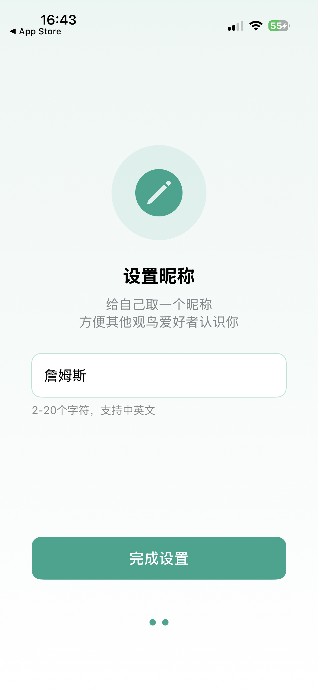
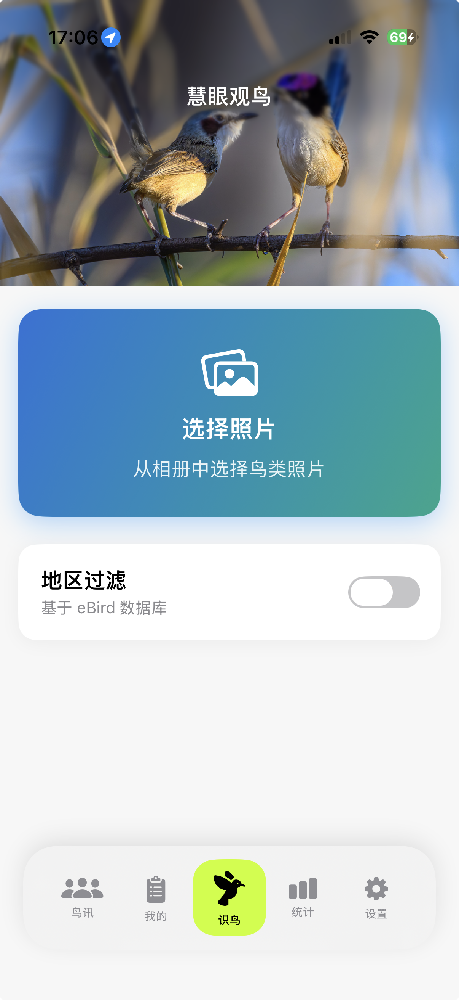
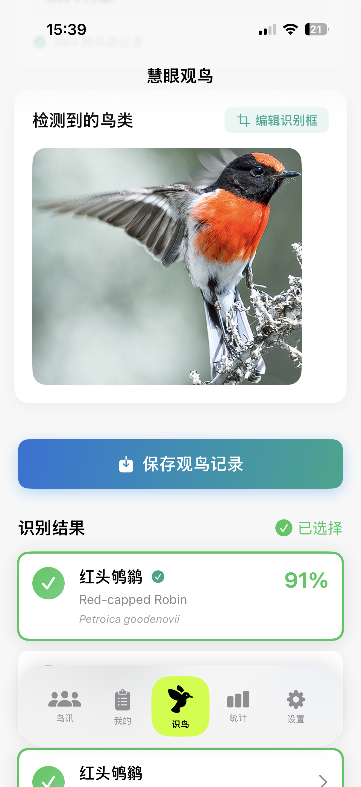
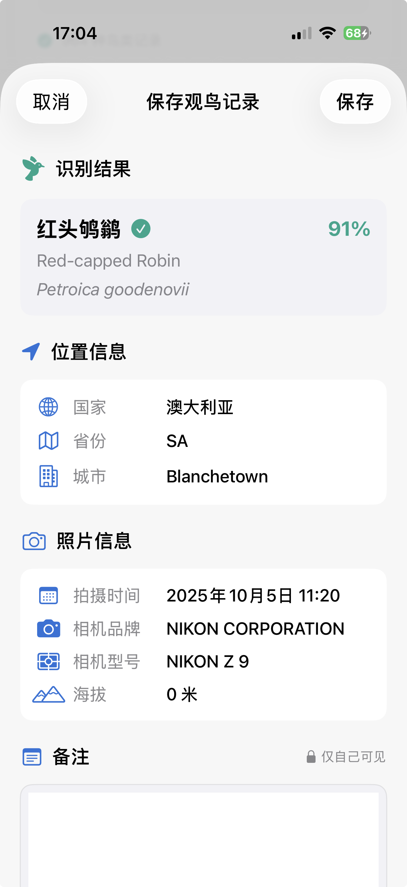
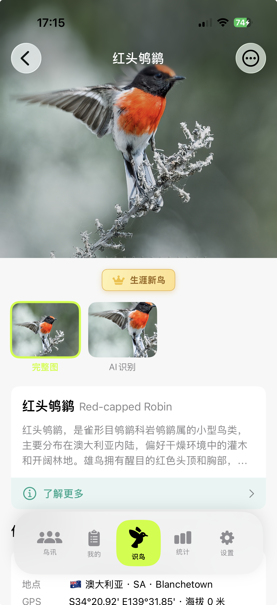
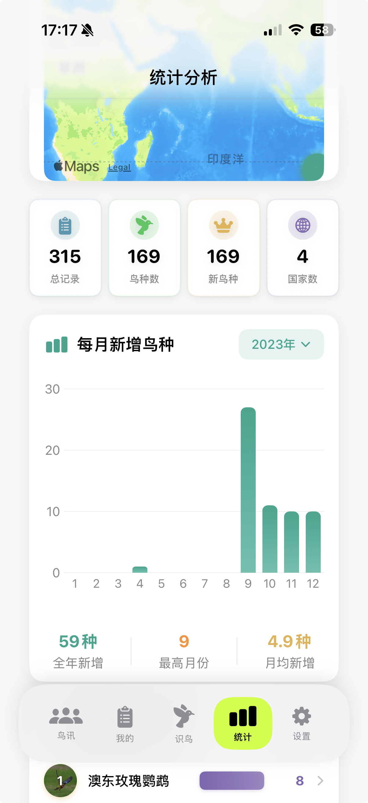
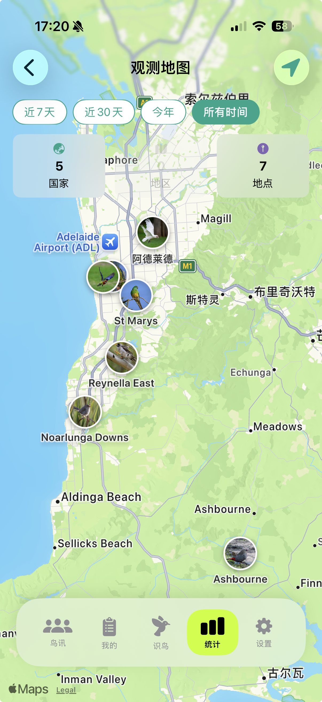
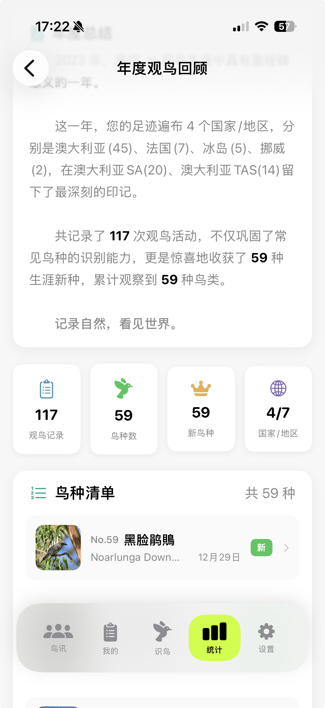
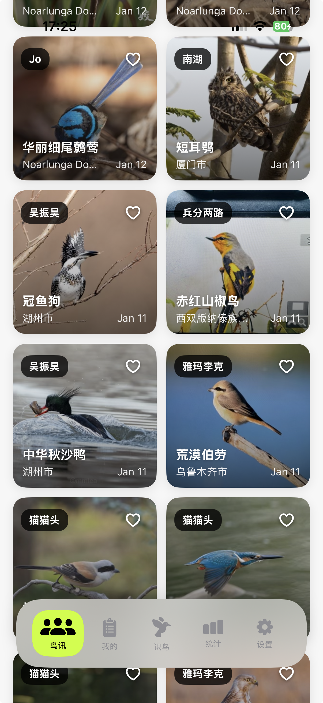

快速入门 Quick Start
下载应用 Download
在 App Store 搜索"慧眼观鸟"或直接点击下方按钮下载。 Search "SuperBirder" in App Store or click the button below.

Apple ID 登录 Sign in with Apple
首次使用需要通过 Apple ID 登录，这是苹果官方的安全登录方式。 Sign in with your Apple ID for secure authentication.
使用 Apple ID 登录无需记忆额外密码，国内国外用户都可以使用，数据自动跨设备同步。 Apple ID works worldwide with automatic cross-device sync.

设置昵称 Set Nickname
登录后设置你的昵称（2-20个字符），昵称将显示在你分享到社区的记录中。 Set your nickname (2-20 characters) which will appear on your shared sightings.

鸟类识别 Bird Identification
选择照片 Select Photo
在主页面点击"选择图片"按钮，从相册中选择一张鸟类照片。 Tap "Select Image" and choose a bird photo from your library.
建议使用系统相机拍摄高清照片，相机拍摄的图片识别效果最佳。 Use your system camera for best identification results.

查看识别结果 View Results
AI 会在 1-2 秒内完成识别，完全离线运行，无需网络。识别结果显示多个候选鸟种及其置信度。 AI identifies in 1-2 seconds, completely offline. Results show candidate species with confidence scores.
| 置信度 Confidence | 含义 Meaning |
|---|---|
| 90%+ | 非常确定，可以直接采用 Very confident |
| 70-90% | 比较确定，建议核对 Fairly confident |
| <70% | 建议手动确认 Verify manually |

eBird 地区过滤 eBird Region Filter
开启 eBird 过滤后，系统会优先显示该地区常见的鸟种，提高识别准确率。系统会记住你的预设。 Enable eBird filter to prioritize local species. Your preference will be saved.

手动修正 Manual Edit
如果照片中有多只鸟或识别不准确，可以点击"编辑识别框"手动调整识别区域，或直接手动输入鸟种名称。 Edit detection box or manually input species name if needed.

保存记录 Save Records
自动提取信息 Auto-Extract Info
确认鸟种后，系统会自动从照片 EXIF 提取 GPS 位置、拍摄时间和曝光参数（光圈、快门、ISO）。 After confirmation, GPS location, capture time and exposure data are auto-extracted from EXIF.
没有地点信息的记录在统计分析中价值大打折扣。养成保留照片 GPS 信息的习惯。 Records without location data have limited value. Keep GPS enabled.

手动选择地点 Manual Location
如果照片没有 GPS，可以搜索地点或在地图上手动选点。 If no GPS, search for location or pick on map.
分享到社区时不会上传精确 GPS 坐标，备注内容也不会上传，仅保存在本地。 Precise GPS and notes are never uploaded, stored locally only.

我的记录 My Records
瀑布流浏览 Waterfall Layout
"我的"页面以瀑布流形式展示所有观鸟记录，双列布局，图片自适应高度。生涯新种会有皇冠标记。 "My" page displays all records in waterfall layout. Life birds are marked with crowns.

记录详情 Record Details
点击卡片查看详情，本地画质比云端高一倍以上。可以打开 Apple 地图或 Google 地图导航到拍摄地点。 Tap card for details. Local quality is 2x better than cloud. Navigate with Apple or Google Maps.
"生涯新种"指你人生中第一次拍摄到的鸟种，按拍摄时间判定，与添加时间无关。 "Life Bird" is a species you photographed for the first time, determined by capture time.

统计分析 Statistics
数据总览 Overview
统计页面显示总记录数、鸟种数、生涯新种数、国家数等核心数据，可按时间范围筛选。 Stats page shows total records, species count, life birds, and countries. Filter by time range.

世界地图 World Map
在地图上查看你的观鸟足迹。放大地图后，绿色标记会变成你拍摄的鸟类缩略图。 View your birding footprint on map. Zoom in to see bird thumbnails instead of green markers.

年度报告 Yearly Report
生成你的专属年度观鸟回顾，包含年度总结数据、亮点鸟种、观鸟地图，可保存为图片分享。 Generate your annual birding summary with highlights, and save as image to share.

社区鸟讯 Community
浏览与互动 Browse & Interact
"鸟讯"是慧眼观鸟的社区功能，浏览其他观鸟爱好者分享的记录，发现新鸟种，点赞优秀照片。 "NEWS" is the community feature. Browse others' sightings, discover species, and like great photos.
社区数据存储在苹果公司提供的 iCloud 云服务上，与慧眼观鸟应用本身无关。 Community data is stored on Apple's iCloud servers via CloudKit, not by SuperBirder.

设置管理 Settings
个人资料与偏好 Profile & Preferences
在设置页面可以修改昵称和头像、设置默认排序方式、设置是否默认分享到社区。 Manage nickname, avatar, default sorting, and sharing preferences.